This project implements an ensemble approach to detect fraudulent credit card transactions using multiple anomaly detection algorithms. The script is designed to use unsupervised machine learning models to identify anomalous transaction data that may indicate fraudulent activity.
The project structure is shown below. Contents of the data directory is not included in the repository due to file size limitations.
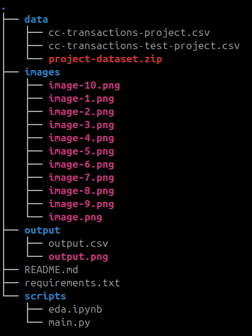
To install and run the analysis script please perform the following:
```bash
pyenv activate 3.11.0.venv python3 -m pip install -r requirements.txt
python3 scripts/main.py -i data/ -o output/ ```
The script will generate predictions and output a file with an is_fraud column indicating potentially fraudulent transactions (1 = fraud, 0 = legitimate). Script output timing:
```bash training on: 129667 samples running isolation forest model training time: 0.88 seconds running one-class svm model training time: 49.39 seconds running local outlier factor model training time: 9.23 seconds running hdbscan model training time: 46.65 seconds getting zscores training time: 0.00 seconds
testing on: 555719 samples generating predictions on test data running isof on test data time: 1.06 seconds running svm on test data time: 68.61 seconds running lof on test data time: 20.17 seconds running hdbscan on test data time: 217.77 seconds running zscore on test data time: 0.00 seconds
```
The script will also output the distribution of the ensemble scores. This may be used to finetune the output.
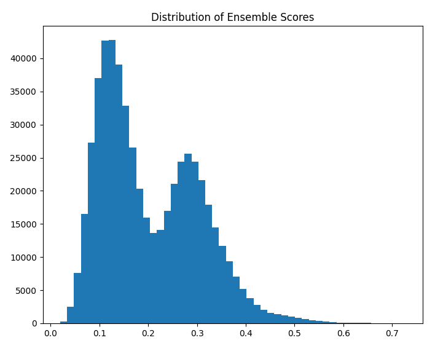
The script performs several data preparation steps: - Extracting time features (hour of day, time categorization) - Computing purchaser age at transaction time - Encoding categorical variables - Calculating time between transactions per card - Log-transforming transaction amounts - Standardizing numerical features
Five different anomaly detection techniques are used: - Isolation Forest: Effective for isolating outliers in high-dimensional spaces - One-Class SVM: Identifies regions in the feature space where normal transactions occur - Local Outlier Factor: Detects samples that are locally outlying compared to their neighbors - HDBSCAN: Density-based clustering to identify points in low-density regions - Z-score Analysis: Statistical method to detect values far from the mean (applied to log-transformed transaction amounts)
Additional factors like age verification are also incorporated into the ensemble.
The script creates a unified fraud score by: - Calculating anomaly scores from each model - Normalizing scores to the [0,1] range - Classifying transactions with scores above the 99th percentile as potentially fraudulent
Analysis of the training dataset identified the following key findings: - Bimodal Distribution: Transaction amounts show a bimodal distribution when log-transformed - Time Anomalies: Some cards had multiple transactions within very short time spans (<30 seconds) - Off-hour Transactions: Unusual geographic patterns for transactions occurring during unusual hours - Age Anomalies: Several transactions where the purchaser appears too young to be making a purchase
Analysis of the file “cc-transactions-project.csv” has uncovered several insights. First, the data contains 1296675 entries with 22 columnar variables. Every column / row contains data and no missing or NA values were observed. The recordnumber and transactionnumber appear to be unique values related to a particular merchant transaction and are most likely uninformative. Analysis of the merchant, category, and job identified 939, 14, and 494 unique categorical values per variable. Likewise, the cc_number variable was found to contain 983 unique values.
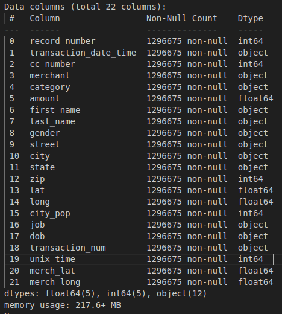
Digging a little deeper into the data, the amount variable (shown as Transaction Amount) displays a bi-modal distribution when log transformed.
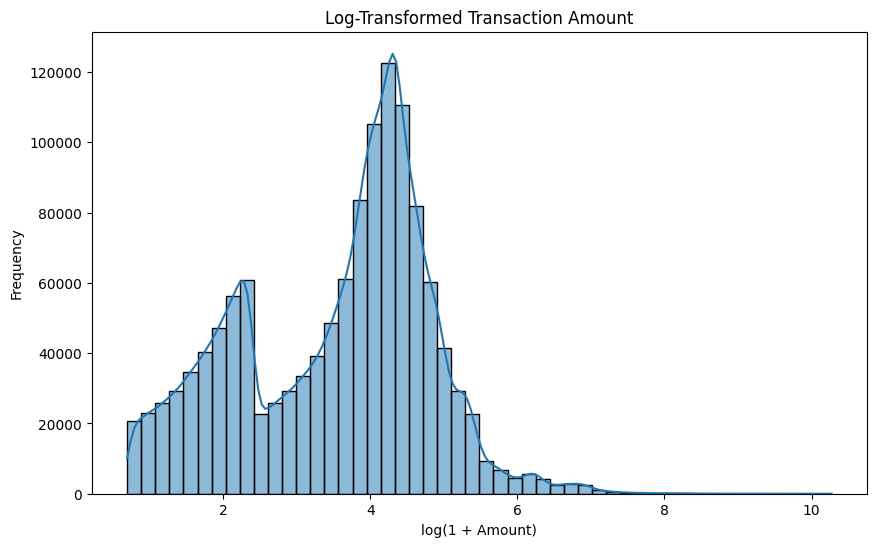
There did not appear to be any notable outliers when investigating the transaction counts for merchant category and gender .
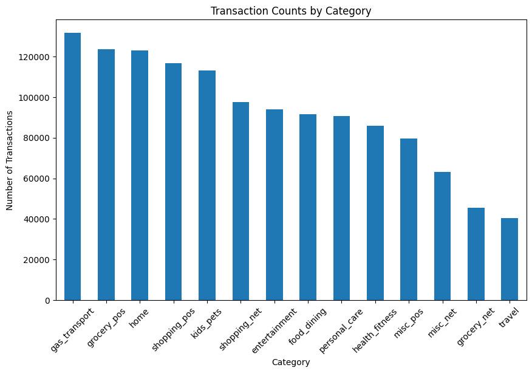
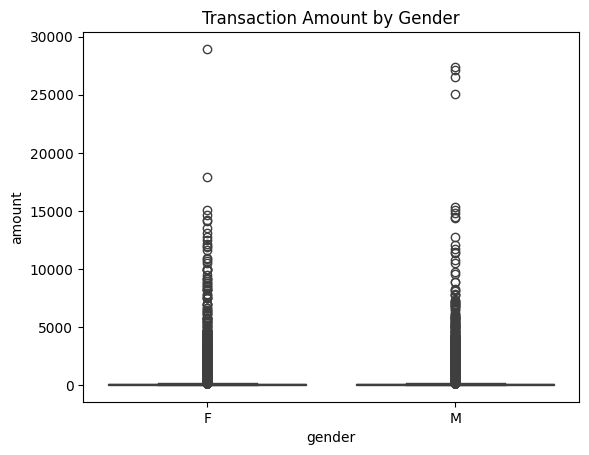
The distance between a purchaser and the merchant also appeared normal.
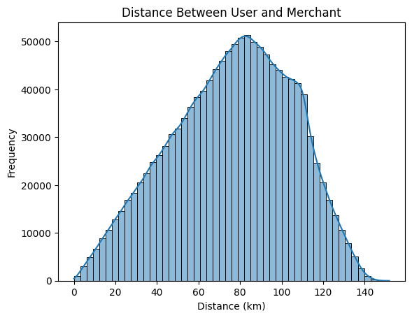
However, when we look at spending distribution compared to the job type we begin to see some outliers emerge. Looking at the mean purchase amount per job and merchant category we can see that the average purchases is below $200.0.
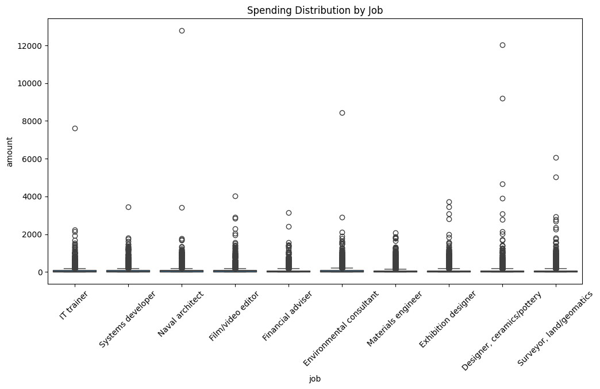
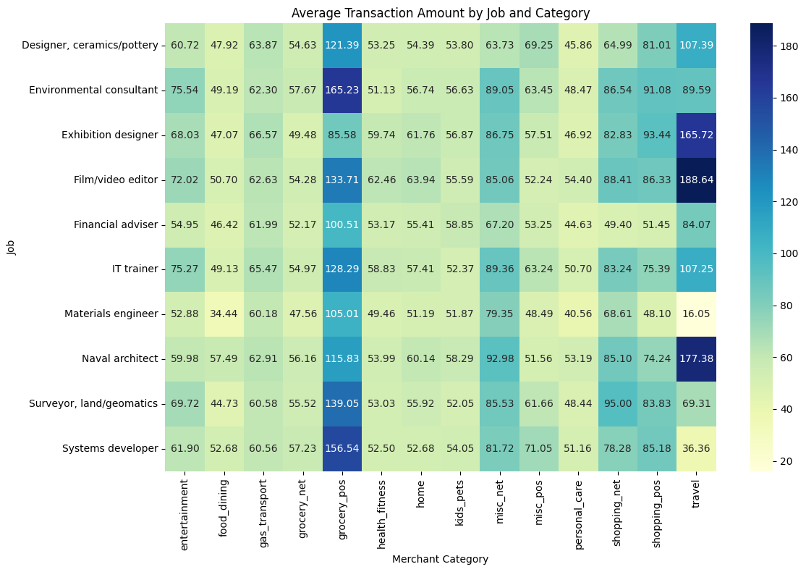
Moving the analysis into the time domain we can see that some card numbers have multiple transactions within a very short time span ( < 30 seconds).
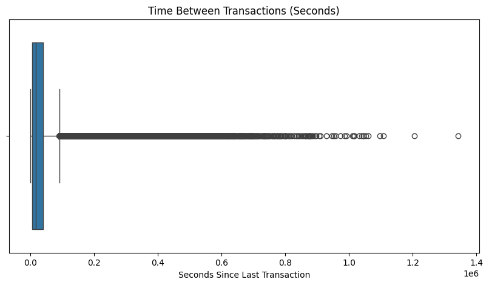
Adding in a geography component to the purchase time we can see multiple transactions occurring at off peak hours.
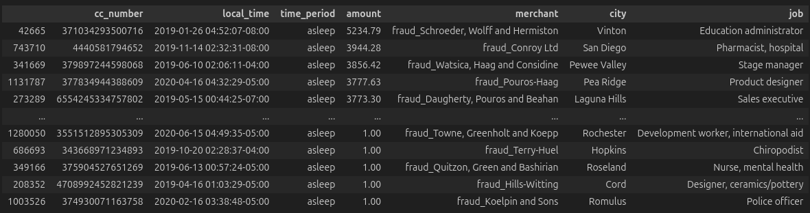
Finally, looking into the dob of the purchaser when compared to the purchase date we see several transactions where the purchaser appears to be too young to be making a purchase.
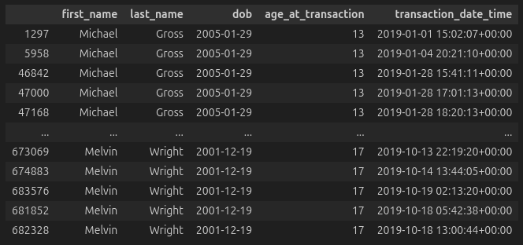